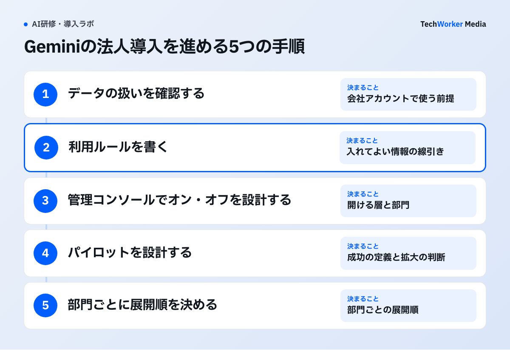
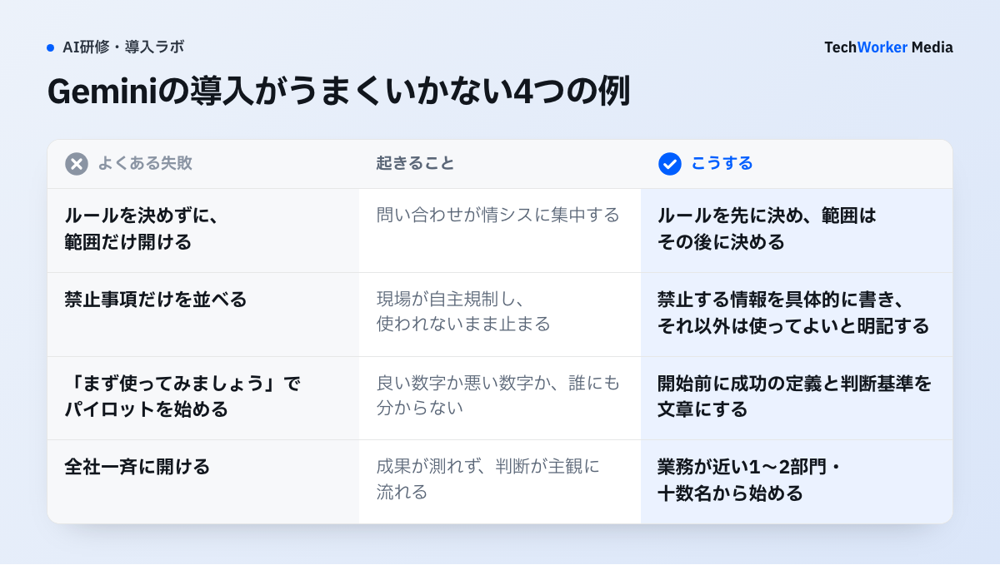

Geminiの法人導入では、何を決めればよいですか？
契約はすでに済んでいます。決めるのは、開ける範囲、利用ルール、展開の順番の3つです。
数年前まで、生成AIの法人導入は「契約する／しない」から始まりました。2026年のGeminiは違います。Google Workspaceの各プランに、Gemini AI アシスタントが含まれるためです。
多くの企業では、稟議が起票される前から、社員のGmailとGoogle ドキュメントに機能が存在しています。情シスに相談が来る時点で、現場はすでに触っています。
導入プロジェクトで決めることは、次の3つです。
- 開ける範囲。どの機能を、どの組織部門に、いつからオンにするかを決めます。
- 利用ルール。入れてよい情報の範囲、個人アカウント利用の扱い、生成物の確認責任を決めます。
- 展開の順番。どの部門から始め、何を見て次に進むかを決めます。
順番が大切です。ルールを決めずに範囲だけ開けると、機能は開いているのに誰も踏み込みません。範囲を止めたままルールを議論しても、現場はすでに使えるので実効性がありません。ルールを先に、範囲はその後に決めます。
導入は、どんな手順で進めればよいですか？
データの扱い、利用ルール、管理コンソール、パイロット、展開順の5つの手順で進めます。

手順1：データの扱いを確認します。「入力した社内情報がAIの学習に使われるのでは」という懸念は、導入相談で最初に出る論点です。Googleは、公式ヘルプの生成AIプライバシーハブで説明しています。対象はGoogle Workspaceの生成AI機能です。内容は次のとおりです。
プロンプトと生成された内容は組織外に共有されません。許可なく生成AIモデルの学習には使用されません。人によるレビューも行われません（2026年8月時点・Google Workspace ヘルプ「生成 AI に関するプライバシー ハブ」より要約）。
この保護は、会社のGoogle Workspaceアカウントで使ったときの話です。社員が個人のGoogleアカウントでGeminiを使うと、適用される規約もデータの扱いも別になります。実務上の論点は、社員が業務情報をどのアカウントで扱っているかです。会社アカウントでの利用に寄せるため、ブラウザのプロファイル分離、利用ルールへの明記、周知を行います。
手順2：利用ルールを書きます。入れてよい情報の線引きが曖昧だと、現場が全面的に自主規制します。禁止する情報を具体的に列挙し、それ以外は原則可と書きます。生成物の確認責任は、「対外文書は人が最終確認」の1行で足ります。
禁止事項だけを並べたルールは、現場では「全部ダメ」と読まれます。禁止する情報を具体的に書き、それ以外は使ってよいと明記すると、利用率が動くことがあります。ルールは制限であると同時に、許可の表明でもあります。
手順3：管理コンソールで、オン・オフを設計します。管理コンソールでは、生成AI関連のサービスをオン/オフできます。単位は、サービスごと、組織部門ごとです。設定項目名や画面構成は更新されます。実施前に管理コンソールと公式ヘルプで最新の状態を確認してください。設計の対象は、おおむね次の層です。
- 各アプリ内のGemini機能は、Gmail・ドキュメント・スプレッドシートなどに組み込まれたAIアシスタントです。日常業務の入口になる層です。
- Gemini アプリは、チャット形式で使う層です。プランによって、使えるモデルや機能の範囲が異なります。
- Gemini Notebook（旧NotebookLM）は、指定した資料の中だけで回答させる用途です。2026年にNotebookLMから改称されました。法人向けエディションは Gemini Notebook Enterprise です。管理者側でユーザーごとにオン/オフできます。
- Google Workspace Studioは、プログラミングなしで反復作業を自動化するツールです。作る側の層にあたるため、開ける対象を絞る判断がしやすくなります。
設計方針は、「使う層は広く、作る層は狭く」です。日常業務のAIアシスタントは、全社で開けても運用は破綻しません。自動化フローやエージェントを作れる層まで一気に開けると、品質のばらつきと管理対象の増加が同時に来ます。作る層の広げ方は、GemsとWorkspace Studioによる内製で扱います。
全社のエージェントを一元管理したい場合は、別建ての選択肢があります。Google Cloud側の Gemini Enterprise です。Workspace外のデータ基盤とつなぎたい場合も同じです。公式ページの案内は次のとおりです（2026年8月時点）。Business エディションは1シート月額21米ドルからです。Standard / Plus エディションは1シート月額30米ドルからです。Workspaceの機能で足りるかを先に確かめてから検討します。
手順4：パイロットを設計します。人数より、何をもって成功とするかを先に決めます。評価の枠は、開始前に次のように作ります。
- 対象：業務が近い1〜2部門・十数名にします。職種がばらけすぎない単位です。
- 期間：1〜2か月にします。研修、実務適用、振り返りが1周する長さです。
- 対象業務：頻度が高く、成果物の形が決まっている業務を2〜3個選びます。
- 成功の定義：利用率に加えて、業務側の指標を1つ置きます。所要時間や差し戻し回数などです。
- 撤退・拡大の判断：何が起きたら全社展開に進むかを、先に文章化します。
業務側の指標は、精緻さより継続して取れることを優先します。所要時間の自己申告でも、同じ人が同じ方法で前後を比べれば判断材料になります。取れない指標を設計して、測定が止まる事態を避けます。
手順5：部門ごとに、展開順を決めます。Geminiが届く範囲を先に測ってから、順番を決めます。測り方は、下の比較表で示します。
導入がうまくいかない例には、どんなものがありますか？
ルールを決めずに開ける、禁止だけ並べる、目的なくパイロットを始める、一斉に展開するの4つです。

- ルールを決めずに、範囲だけ開ける。部門ごとに使える機能が違う理由を説明できず、問い合わせが情シスに集中します。
- 禁止事項だけを並べる。「使ってはいけない気がする」で現場が自主規制し、使われないまま止まります。
- 「まず使ってみましょう」でパイロットを始める。利用ログは残っても、良い数字なのか悪い数字なのか誰にも分かりません。各部門から1名ずつ集めて共通の題材が作れない例や、2週間で終えて日常業務に戻る前に評価してしまう例もあります。
- 全社一斉に開ける。成果が測れないまま、「よく分からないもの」になります。結果が出てから基準を作ると、判断が主観に流れます。
パイロットが成功した企業が全社展開でつまずく理由は、ほとんどの場合ツール側にありません。AIは手が届く範囲の情報しか使えないためです。ドキュメントとスプレッドシートで業務が回る部門では、Geminiは最初から文脈を持っています。紙とローカルファイル、Workspace外の基幹システムで回る部門では、手ぶらのAIしか使えません。
全社展開の直後には、「開けたのに使われない」問題も起きます。Geminiは購入の実感を伴わずに配られるため、Copilotとは違う形で認知の壁が現れます。その構造と対策は、Geminiが定着しない原因と対策で扱います。費用と稟議の組み立ては、Gemini研修の費用相場にまとめています。
部門の状態によって、Geminiが届く範囲はどう違いますか？
Drive上で業務が完結する部門は届きやすく、紙や基幹システム中心の部門は届きにくくなります。
| 部門の状態 | Geminiが使える範囲 | 先に手を打つこと |
|---|---|---|
| 業務がDrive上のドキュメント・スプレッドシートで完結 | 要約・下書き・整形・分析まで自然に届く | 型（Gem）の整備と共有に集中する |
| ファイルはあるがローカル・共有サーバーに散在 | 都度アップロードすれば使えるが手間で続かない | 対象業務のファイルだけDriveへ移す（全移行はしない） |
| 紙・基幹システム中心で電子ファイルが薄い | 汎用的な文章作成にしか使えず、価値を実感しにくい | AI導入より先に業務の電子化。順番を入れ替えない |
この見極めを展開計画に反映すると、「全部門に同時に開けて、同じ研修を配る」設計にはなりません。部門ごとに、Geminiが届く範囲を先に測ってから展開順を決めます。
よくある質問
2026年8月時点では、Google Workspaceの各プランに Gemini AI アシスタントが含まれています。すでにWorkspaceを使っている企業は、AIライセンスを新たに買いません。管理コンソールで利用範囲を設計する作業から始めます。全社のエージェント基盤まで進む場合は、別建ての選択肢があります。Google Cloudの Gemini Enterprise（Businessエディションは1シート月額21米ドルから）です。
Googleは公式の生成AIプライバシーハブで、Google Workspaceの生成AI機能について説明しています。プロンプトと生成結果を組織外に共有せず、許可なく生成AIモデルの学習に使わず、人によるレビューも行わないという内容です。ただし、社員が個人のGoogleアカウントで使うGeminiは扱いが異なります。業務利用は会社アカウントに寄せるルールが必要です。
大きくは3点です。Gemini関連サービスを、どの組織部門でオンにするかを決めます。Gemini Notebook（旧NotebookLM）などの関連サービスを開けるかを決めます。監査とアラートをどう見るかも決めます。全社一律で開けるか、部門単位で段階的に開けるかは、パイロットの設計と合わせて決めます。
一律の正解はありません。業務が近い1〜2部門・十数名規模で、1〜2か月が動かしやすい単位です。人数より、何をもって成功とするかを先に決めることが大切です。利用率に加えて、対象業務の所要時間や差し戻し回数など、業務側の指標を1つ置くと判断できます。
次の一歩は何から始めればよいですか？
利用ルールの下書きを作り、パイロットの対象部門と成功の定義を決めることから始めます。
- 入れてよい情報と禁止する情報を書き出し、利用ルールの下書きを作ります。
- 管理コンソールで、使う層と作る層のどこまでを開けるかを決めます。
- パイロットの対象部門、期間、成功の定義を文章にします。